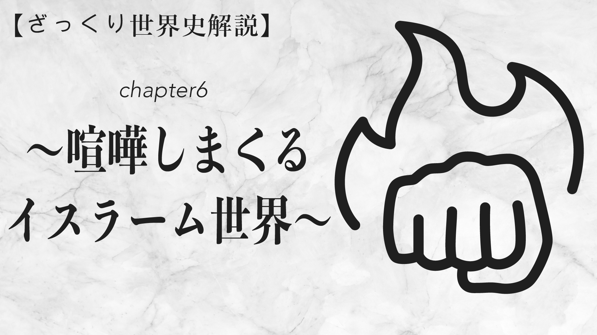

【ざっくり世界史解説】
chapter6
〜喧嘩しまくる
イスラーム世界〜

どうも、アルムです。
今回は「ざっくり世界史解説」のChapter6「〜喧嘩しまくるイスラーム世界〜」ということで紹介してきたいと思います。
前回は「文化の融合のイスラーム教」と言うことで、メソポタミアとかエジプトを含む計4つの地域の成り立ちと、イスラーム教誕生の歴史までを解説しました。確か最後は、ウマイヤ朝からアッバース朝に変わって、税金云々の話をしたところで終わったかと思います。まだ見てない方はぜひそちらから見て下さい。
今回はその続きで、繁栄したアッバース朝と周辺の中東地域がどう変わっていったかということと、トルコ人による王朝が急に存在感を増してくるようにもなるんで、その辺の解説をしていこうと思います。みなさんご存知あの「オスマン帝国」も実はトルコ人によって作られた帝国なので、そこに至るまでの経緯も解説していこうと思います。今回は中東の王朝同士が喧嘩しまくるんで、王朝の入れ替わりが激しいんですが、王朝の名前とかはそこまで覚えなくて大丈夫です。この世界史解説の目的はあくまでストーリーを伝えることなので、中東がどう変わっていくのかという流れをざっくり掴んでくれればそれでいいです。まったり、気楽に聴いていって下さい。
それでは早速いきましょう。
人口が増えて繁栄を誇っていったアッバース朝なんですが、10世紀ごろになると、その領土はだいぶ窮屈になっていきます。イランの地域で建てられた「ブワイフ朝」という王朝と、エジプトの地域で建てられた「ファーティマ朝」という２つの王朝が勢力を拡大していって、アッバース朝はその２つに挟まれる形で位置してたので、かなり勢力が衰えていたんですね。この頃ファーティマ朝では都として「カイロ」が新たに建てられて、イスラームの高等教育施設とかがバンバン建てられていって、イスラーム教学の中心になっていきました。だから今のエジプトの首都になってるカイロは、実はこの頃に初めてできたんですね。逆に言うと、ピラミッドとかが造られてた頃のエジプトにはカイロはできてなかったんですよ。
これは意外でしたね。てっきりエジプトの初期の頃にとっくに作られてたもんだと勝手に思ってたので、アッバース朝が衰えてた頃に初めてできていたとは思いませんでした。
エジプトがイスラームの中心になっていく雰囲気からみても、アッバース朝にいたカリフは、もはや実権を保てなくなるくらいになってたんですね。
そして、10世紀の中東に起きたもう一つの大きな変化、それがトルコ人王朝の台頭です。
中央アジアに位置する土地で、トルコ民族初の王朝「カラ=ハン朝」が建てられます。「トルコ」と聞くと、現在の中東とヨーロッパの間にある「トルコ共和国」を思い浮かべると思うんですけど、実は最初のルーツはカスピ海の東にある「トルキスタン地方」というところなんですね。カスピ海は地図で言うと、中央アジア（カザフスタンとかトルクメニスタンみたいな〇〇スタンの国が集まってるところ）と、イランの北側に挟まれた縦長の海です。現在のトルコはそこよりもっと西にあるので、最初のルーツは今とは違う場所からきてるんですね。
トルコ人の特徴としては、体格が良いこと、そして戦闘への適性があることです。生まれながらにして戦いのサラブレッドということで、各地で傭兵や奴隷兵として活躍していたんですが、とうとう自分達の王朝を作り上げることになったんですね。イスラームも受け入れるようになって、中東の文化を浸透させていきます。新たにカリフも擁立してしまうんですね。これをキッカケに、この後トルコ人国家が各地でどんどん建てられていって、16世紀までイスラーム世界の中心になっていきます。
西側では依然、後ウマイヤ朝というウマイヤ朝の生き残りが存続していたんですが、ここでもカリフを自称してる奴がいました。なので、10世紀の中東はアッバース朝、カラ＝ハン朝、後ウマイヤ朝の３つが並んで、それぞれの王朝がカリフを自称しているという状態です。こうして一人の指導者の下イスラームをまとめるという伝統は失われて、イスラーム世界はそれぞれの国が覇権をかけて争う「戦国時代」に入っていきます。
この辺はヨーロッパの歴史とあんま変わんないですね。ヨーロッパも教会の分裂後は「百年戦争」ということで、イギリスとフランスが覇権をかけて争うという事やってましたけど、結局、宗教のトップをどこに置くかということで揉めてるんで、当事者じゃない目線からみると、滑稽だなとも思ってしまいますね。「一神教の問題点」が垣間見えるのもまさにここじゃないかなと個人的には思います。
さて、11世紀の後半になるとトルコ人王朝がさらに存在感を増していきます。まず、「セルジューク朝」です。初代トップになったトゥグリル＝ベクという人物が中央アジアからアラビア半島までを一気に勢力を広げたことで、ブワイフ朝に支配されていたバクダッドを占領します。この頃アッバース朝のカリフがブワイフ朝に捕らえられてたんですが、それを彼が解放したということで、アッバース朝のカリフから、助けてくれたお礼として「スルタン」という称号を与えられました。この「スルタン」というのは、「カリフが実際の世界の統治権を与えて代わりに治めさせるポスト」のことです。日本で言うと「天皇が征夷大将軍に実際の世界の統治権を与える」と言う意味合いに近いですね。こうしてセルジューク朝はアッバース朝のカリフに気に入られながら順調に勢力を拡大していきました。ヨーロッパへもかなり影響を与えていて、十字軍派遣のキッカケを作ったのも実はセルジューク朝です。「十字軍派遣は、聖地イェルサレムをイスラーム勢力に占領されて、ビザンツ帝国が救援を求めたことから始まった」と言う解説を以前したんですけど、そのイスラーム勢力というのがセルジューク朝のことです。勢力を拡大してイケイケ状態だったセルジューク朝が「このまま聖地も貰っちゃおうぜ」ということでイェルサレムに攻めいったことが、ヨーロッパの歴史に大きく変える十字軍の派遣に繋がっていったんですね。この辺りの歴史も学校では詳しく教えてくれないので個人的には面白いポイントです。十字軍派遣については何となく聞いたことはあったんですけど、「じゃあ何でそんなことしなきゃいけなかったのか？」というストーリーを教えてくれることは、僕が高校時代の時は一切ありませんでした。でもこうやって十字軍派遣に至るまでのストーリーを分かると、世界の流れをだいぶ分かりやすく捉えられるのでメチャクチャ参考になりますね。このセルジューク朝による聖地の独占から、イスラーム王朝は十字軍と何度も争うことになります。
さあ、存在感が増してきたトルコ人王朝はセルジューク朝だけではありません。西側で台頭してきたもう一つの王朝が、「ムラービト朝」です。
後ウマイヤ朝が滅亡した後、ベルベル人という民族が北アフリカからイベリア半島にかけて建てた王朝がこのムラービト朝なんですけど、この王朝が後世に果たした役割というのが、「アフリカ北部へのイスラームの浸透」なんです。ムラービト朝は建国後に、アフリカの内陸にあったガーナ王国を攻撃してるんですね。だから今でも「イスラーム世界」を地図で表現しようとすると、アフリカの北部まで含まれるんですが、その理由はこの頃にムラービト朝がアフリカに攻め入っていた歴史があるからなんですね。
他にも、最初にできたカラ＝ハン朝は存続していたりとか、アフガニスタンの地には「ガズナ朝」という、これもトルコ人による王朝が建てられて、11世紀の中東はセルジューク朝、ムラービト朝、カラ＝ハン朝、ガズナ朝という、トルコ人王朝で埋め尽くされるような時代になります。
さて、12世紀になるとセルジューク朝も衰退していきまして、イスラーム世界の中心はエジプトから生まれた「アイユーブ朝」という王朝になっていきます。この時代はヨーロッパから来る十字軍と何度も戦っていた時期なんですが、ヨーロッパの歴史で解説した通り、十字軍遠征は最初の１回以外は全部失敗に終わってるんですね。理由は、十字軍の兵士が戦いの中で、仲間であるはずのビザンツ帝国の首都を占領したりみたいな「兵士の暴徒化」が起きちゃったっていうのもあるんですが、もう一つの理由として、「単純にイスラームの軍隊が強かった」というのもあったんですね。それを決定づけたのが、この時期行われた第３回十字軍遠征です。第３回と言えば、獅子心王のリチャード１世などのヨーロッパ各国の王がイスラーム軍と戦って引き分けに終わったっていう、十字軍遠征の中でも「華の回」と言われる遠征だったんですが、その獅子心王と死闘を繰り広げたアイユーブ朝の人物というのが「サラディン」という奴です。彼は戦いの中で敵国のキリスト教徒を捕虜にしたんですが、最終的にはその捕虜を殺すことなく、そっとお金を手渡して故郷に帰らせたというメチャクチャ人情味に溢れるエピソードを残した人物として知られています。リチャード１世が率いる十字軍の場合は、捕虜にしたイスラーム教徒が身代金を払えなかった場合は容赦なく殺してたんですが、サラディンは敵を捕虜にしても殺すようなことはしなかったんですね。リチャード１世と死闘を繰り広げたくらいですから戦闘に関してはかなり優秀だったんですが、敵を無闇に殺すような行為はしないという性格の持ち主だったので、十字軍の兵士からも真の勇者と称えられるほど、英雄中の英雄だったそうです。
これも面白いエピソードだなと個人的に思います。「殺さずに生かして利用する」みたいなやり方は、中国の有名な戦略書である「孫子」にも述べられてることなんですよね。目的は「勝つ」ことであって「戦うこと」それ自体ではないと。だから戦わずに勝てるのならそれがいいし、戦いに勝って敵の戦力が残っていたとしても、殺さずに生かして利用する方がいいという考え方が、この本には何度も出てくるんですよね。中東は「文化の中継地点」として中国との交易も盛んに行っていた歴史がありますから、もしかしたらサラディンは、その中国の文化を戦いに取り入れたのかも知れませんね。
その一方、トルコ人王朝はどうなってのかというと、東の方で新たに「ホラズム朝」という王朝が建てられてたんですが、この王朝が後世に名を残したのは、栄えていたとかそういうことではなく、「滅びっぷり」の方です。
13世紀になると、チンギス＝ハン率いるモンゴル帝国がホラズム朝を東から圧迫してきまして、チンギス＝ハンはホラズム朝に通商使節(外国と商売を行うために派遣された人のことです)を派遣するんですが、この使節がなんとホラズム朝の太守（たいしゅ）に殺されてしまうんですね。訃報を知ったチンギス＝ハンは「何殺してくれちゃってんの？」ということで、報復とばかりにホラズム朝への遠征を決行し、ホラズム朝にいた太守を捕らえて、両目と両耳に溶かした銀を流して殺すという超残酷な復讐を行いました。その後もモンゴルに帝国に都を攻め入られて破壊と略奪の限りを尽されたことで、人口の４分の３が虐殺されたと言われています。こうしてホラズム朝は「チンギス＝ハンという有名人に滅ぼされた国」として有名になってしまったんですね。だいぶ皮肉な話です。
さあ、時代をどんどん進めて、今度は13世紀に入ります。13世紀はモンゴル民族が大帝国を築いた、まさに「モンゴルの世紀」です。中東もその影響を受けて、チンギス＝ハンの孫・フラグが建国した「イル=ハン国」が中心勢力になります。ここはモンゴル帝国の一部として西アジアの統治を担うようになるんですが、７代目のトップに変わると、宗教をイスラームに改宗して、イスラーム国家として安定した統治を行うようになります。
一方で、イル＝ハン国の東西には「マルムーク朝」と「奴隷王朝」という２つのトルコ人王朝ができます。エジプトにできたマルムーク朝の「マルムーク」というのは「トルコ人の奴隷兵」という意味で、奴隷身分出身の女性である、シャジャル＝アッドゥルという人物が軍隊を率いてエジプトに政権を立てのが、マルムーク朝です。彼女はイスラーム世界の中では数少ない女性統治者で、第６回十字軍遠征ではルイ９世を破ったりと、優れた統率力を発揮したことで知られています。東のインドの方には「奴隷王朝」という、これもトルコ人奴隷兵による王朝がインドの北部に建てられまして、「トルコ人奴隷兵中心の王朝」が２つできることになりました。
では目線を移して、イベリア半島での変化を見てみましょう。イベリア半島でイスラーム国家を築いていたのは「ナスル朝」という王朝です。イベリア半島のイスラーム国家はこれまで、ウマイヤ朝、後ウマイヤ朝、ムラービト朝などと続いてきたんですが、この時代になると、キリスト教国による「国土回復運動（レコンキスタ）」が始まっていて、イベリア半島を奪還するための運動に、ナスル朝は常に晒されていきます。この王朝はイベリア半島における「イスラーム国家の最後の砦」とされていたんですが、新しく成立したスペイン王国によって都のグラナダを攻略されたことで、ついに消滅してしまいました。ただ、イスラーム国家の存続が何とか受け継がれてたことで、現在でもスペインの南部はイスラーム教の影響を受けていたりします。国家としては滅びても、長年培われてきた文化は残されたということですね。
この辺りはすごく参考になるなと思っていて、たとえば現在のアフガニスタン、タリバンによる独裁政権が続いていますよね。同じイスラーム教でも原理主義のやり方を良しとしてる政権なので、戒律にはかなり厳格で、逆らうと暴力を振るわれるような状況になってしまってます。でも、現在のイベリア半島を見ると、スペインはキリスト教の国でありながら南部ではイスラム教の文化が残されていたりするわけですよね。こういう異なる文化に対する寛容さが国によってはきちんと残されてることを踏まえると、現在のタリバンも過去の歴史から学んで「異文化に対する寛容な姿勢」を認めれば、恐怖政治という世界からのイメージは大部和らぐんじゃないかなと思ったりもしますね。
さて、14世紀になってイスラーム世界の主役となったのは、「ティムール朝」です。ティムール朝はモンゴル帝国の継承政権の一つとして建国されたんですが、その時の建国者が「ティムール」という人物です。彼はもともと盗賊団の首領だったんですが、軍事の戦略にすごく長けていたことで、一代で大帝国のトップに上り詰めます。若い頃に右足を負傷したり、胸にも深い傷を負ったりと、「鬼武者」のような姿だったそうですが、大帝国だったオスマン帝国でさえ彼には全く太刀打ちできず、「アンカラの戦い」では滅亡寸前にまで追い込まれたそうです。
ここで、オスマン帝国誕生の歴史について最後に解説したいと思います。トルコ人国家はこれまで、11世紀のセルジューク朝、13世紀の２つの奴隷王朝と続いてきたんですが、15～16世紀になると、トルコ人国家としては過去最大規模を誇る帝国が誕生します。それが「オスマン帝国」です。
オスマン帝国の中心になった地域が現在のトルコ共和国が位置する小アジア半島だったので、今ではこの地が「トルコ」と言われます。
オスマン１世によって建国されたオスマン帝国だったんですが、実は最初から強かったわけではなくて、初期の頃は鬼武者ティムールに敗北して、滅亡寸前に追い込まれるんですね。
ところがメフィスト２世という人物がトップに就くと、１０００年以上にわたってビザンツ帝国の都だったコンスタンティノープルを奇襲作戦で陥落させることに成功します。その後、都の名前を「コンスタンティノープル」から「イスタンブール」に改称するんですね。
次いでセリム１世の代に引き継がれると、奴隷王朝の一つだったマルムーク朝を滅ぼし、イスラムの聖地だったメッカ・メディナを押さえ、とうとうイスラームの主役として君臨します。ここがオスマン帝国の歴史上最大のピークです。
ただ、その後はフランスと組んだ「ウィーン包囲」を立て続けに失敗したり、「レパントの海戦」でフェリペ２世率いるスペイン艦隊に敗北したりと、衰退の一途を辿っていきます。
イランの方に目を移すと、ティムール朝が滅亡した後は「サファヴィー朝」という王朝が新たに建てられて、シーア派のイスラム教を国教に定めます。これが長く続いたことで、現在でもイランはシーア派のイスラーム国家として続いていくことになります。
はい、ということで中東の歴史はここで一旦終了です。ざっと解説してみたんですが、どうでしょう？皆さん。中東への認識、大分変わったんじゃないですかね？
僕は今回の歴史を学ぶ前は、現在の中東のイメージだけがどうしても先行して、「ずっと怖くて戒律が厳しい地域」ってずっと思ってたんですけど、こうやって歴史を振り返ってみると、戦いの歴史に関してはヨーロッパとあんま変わんねぇなと率直に感じました。それから何より驚いたのは「文明の発達具合」ですね。正直、今の中東だけ見ると、文明が発達してるイメージはあんまり湧かないんですけど、過去の中東は決してそんなことはなくて、むしろ「文化の中継地点」として、ヨーロッパや中国と盛んに交易をしていた事実があったことは全く知りませんでした。鉄を初めて本格的に使ったのも、金属貨幣を作ったのも、紙を作り方を世界に広めたのも全て中東であることを考えると、世界史における中東の役割についての認識を改める必要があるなと思いました。
イスラム教に関しても、初めは「怖い宗教」という認識しかなかったんですが、こうして成り立ちを学んでみると、「なるほど、元々は信者同士の平等を強く掲げた宗教で、貨幣の誕生と交易の発展の中で生まれていたと。その上で、過激派や原理主義と呼ばれてるのはイスラムーム教の中でもごく一部で、今のアフガニスタンがちょっと特殊な状況なんだな」と認識できたのは勉強になりました。中東の歴史についてはまだまだ深掘りできるところがありそうなので、いずれ、改めて紹介していこうと思います。
さて、次回からは地域史の３つ目、「インド」について解説していこうと思います。この地域も学校の世界史ではうやむやにされてよく分からなかったんですが、インドといえば「ゼロの概念」を発明したことで有名だったりとか、現在だとGoogleのCEOにサンダー・ピチャイという方が就任してますけど、彼もインド出身なんですよね。そんな感じでテクノロジーにも強い一面を持ってたりもするんで、そのインドがどういう成り立ちでできたのか？カレーだけじゃ無いであろうインドの文化や宗教は何なのか？っていうところを分かりやすく解説していきたいと思うので、楽しみにしていてください。
最後までご視聴ありがとうございました。次回もお見逃しなく。
それではまた。
参考文献：『一度読んだら絶対に忘れない世界史の教科書』
続きを見る
一度読んだら絶対に忘れない世界史の教科書 公立高校教師YouTuberが書いた (刊：SBクリエイティブ)
 amazonで見る
amazonで見る